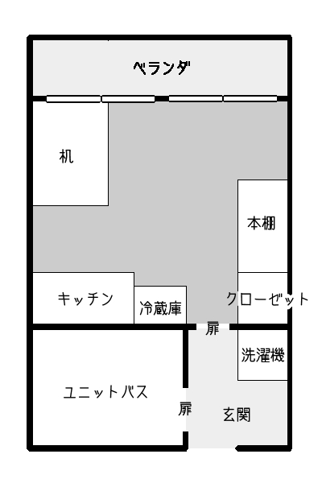
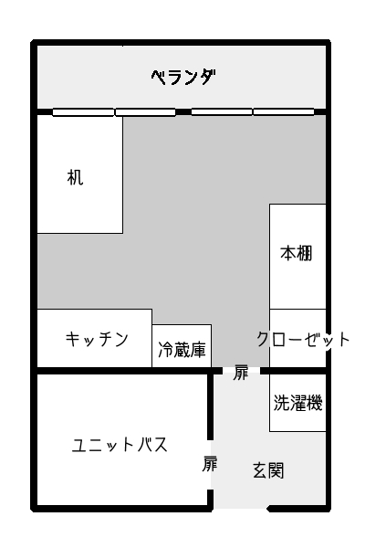
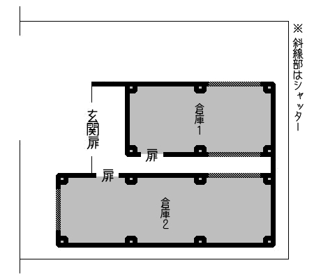
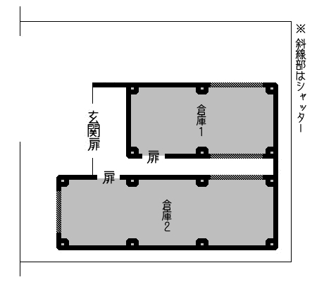

「腐りかけが美味しいとは言いますが」
不快感をおぼえるはずのそのにおいが、何故だか食欲を誘う。
『触れてはならない』、そう思うのに。その禁忌を犯すことに胸が高鳴るのがわかった。
１．はじめに
このシナリオは現代日本を舞台としている。
伝承「肉人」にクトゥルフ要素を申し訳程度に組み込んだような話となっている。「もっと食べたい」の後日譚のような位置づけだろう。
戦闘は基本起きない、探索中心のシナリオである。
・推奨プレイ人数：１～４名
・プレイ時間：音声オンセで４～５時間ほど
・推奨職業：特になし
・推奨技能：≪目星≫
・準推奨技能：≪精神分析≫、交渉技能
２．KP向け情報(シナリオ背景)
とある寺に、「肉人ノ木乃伊」(にくじんのみいら)の名称で保管されていたツァトゥグアの像が、ある犯罪組織によって盗まれ、闇市場に流出、転売先で破損する。奇しくもその破損した像は市場にあらわれ、『超高級肉』として取引されることになった。
探索者たちは、「取引に際して発生した事件を追い、『超高級肉』を依頼人のもとにまで届けること」を依頼される。
このシナリオのクリア条件は、この像の危険を取り除くこと である。依頼の達成自体はクリアに関わらないが、クリア後報酬に影響する。このことはＰＬには伏せる。
迷走しそうであるならば、「依頼を達成すればクリアできる、というわけではない」との表現で伝えるのが好ましいか。
3日前 倉田からの連絡が途絶える
倉田、自宅を出る。倉庫へ
-------
◆ 1日目昼 探索者、肉戸の依頼を受ける
2日目夕 報酬アップ期限
森永、探索者拠点訪問
探索者たちは、「取引に際して発生した事件を追い、『超高級肉』を依頼人のもとにまで届けること」を依頼される。
このシナリオのクリア条件は、
迷走しそうであるならば、「依頼を達成すればクリアできる、というわけではない」との表現で伝えるのが好ましいか。
簡易時系列
5日前 倉田、『超高級肉』入手3日前 倉田からの連絡が途絶える
倉田、自宅を出る。倉庫へ
-------
◆ 1日目昼 探索者、肉戸の依頼を受ける
2日目夕 報酬アップ期限
森永、探索者拠点訪問
３．主要ＮＰＣ
(キャラ付けは進行具合やお好みで適当に変更してください)
倉田（くらた）
肉戸竹千代(ししど・たけちよ)
森永（もりなが）
鴻城月 縁(こうじょうづき・えにし)
若村 若太郎（わかむら・わかたろう）
倉田（くらた）
運び屋さん。裏社会と繋がってもいたみたいで、大きな声では言えないものも運んでいたみたい。太宰治はクソだと思っているらしい。黒色が好き。
[行動指針]
食欲に負けないように頑張っているので、ここ数日で正気度がごっそり削られている。
『超高級肉』が危険なものだと気づき、助けてほしいと思いながらもその危険度の高さから他人を巻き込むことに葛藤している。心根は黒に染まり切れていないらしい。
彼に救いの手を差し伸べるような言動をとると、信頼を得、縋るようにその手を取ることだろう。
・余談
倉庫で発見するから倉田。私は、太宰治の作品は割と嫌いじゃないです。
[行動指針]
食欲に負けないように頑張っているので、ここ数日で正気度がごっそり削られている。
『超高級肉』が危険なものだと気づき、助けてほしいと思いながらもその危険度の高さから他人を巻き込むことに葛藤している。心根は黒に染まり切れていないらしい。
彼に救いの手を差し伸べるような言動をとると、信頼を得、縋るようにその手を取ることだろう。
・余談
倉庫で発見するから倉田。私は、太宰治の作品は割と嫌いじゃないです。
肉戸竹千代(ししど・たけちよ)
肉戸物産代表取締役。権力とお金とお酒と美味しいものが大好き。メディアには顔を出さない。
[行動指針]
『超高級肉』が実際何なのかは理解していない。肉の話は取引で懇意にしている鴻城月 縁からきいた。
『超高級肉』に関して、危険性の説明がきちんとあれば、依頼が達成できないことに納得の上で探索者への報酬も支払われる。
・余談
竹千代は「肉人」伝承とも縁のある徳川家康の幼名から。がははと笑う。
ＫＰによって印象がコロコロかわってしまいそうなキャラ。本人について調査をしても、本人が黒であるという確定情報は出てこないのだけれど、黒く思われがち。かわいそうに。次郎吉おじさまみたいなRPすればいいのかなあ
[行動指針]
『超高級肉』が実際何なのかは理解していない。肉の話は取引で懇意にしている鴻城月 縁からきいた。
『超高級肉』に関して、危険性の説明がきちんとあれば、依頼が達成できないことに納得の上で探索者への報酬も支払われる。
・余談
竹千代は「肉人」伝承とも縁のある徳川家康の幼名から。がははと笑う。
ＫＰによって印象がコロコロかわってしまいそうなキャラ。本人について調査をしても、本人が黒であるという確定情報は出てこないのだけれど、黒く思われがち。かわいそうに。次郎吉おじさまみたいなRPすればいいのかなあ
森永（もりなが）
倉田の親しい友人。仕事の相棒でもあり、普段は倉田に運び仕事の斡旋を行っている。
[行動指針]
肉戸に『超高級肉』を一刻も早く届けることを目的としている。そこに、『超高級肉』の危険性の有無は考慮されていない。
様変わりしてしまった倉田を心配はするが、肉の危険性は理解しようとしない、信じない。
探索者が『超高級肉』を回収したと森永が知れば、自分が届けるから肉を渡せ・もしくは自分も同伴して届けるから今すぐ行こうと強引な姿勢をとる。
危険性の≪説得≫は不可。≪言いくるめ≫に成功で半日ほど時間稼ぎが可能。他、拳で語るなど、使えそうだとＫＰが判断できる手段であれば時間稼ぎ可。
・余談
人のいい楽天家なのにやっていることは探索者のクリア妨害だというやっかいなキャラ。鬱に理解のない森永
[行動指針]
肉戸に『超高級肉』を一刻も早く届けることを目的としている。そこに、『超高級肉』の危険性の有無は考慮されていない。
様変わりしてしまった倉田を心配はするが、肉の危険性は理解しようとしない、信じない。
探索者が『超高級肉』を回収したと森永が知れば、自分が届けるから肉を渡せ・もしくは自分も同伴して届けるから今すぐ行こうと強引な姿勢をとる。
危険性の≪説得≫は不可。≪言いくるめ≫に成功で半日ほど時間稼ぎが可能。他、拳で語るなど、使えそうだとＫＰが判断できる手段であれば時間稼ぎ可。
・余談
人のいい楽天家なのにやっていることは探索者のクリア妨害だというやっかいなキャラ。鬱に理解のない森永
鴻城月 縁(こうじょうづき・えにし)
歴史ある小さな流通会社のオーナー。呪術具だとか古書だとか骨董品だとかを、本人の趣味の延長で取り扱っている。
「何か古の邪神に関わる危ない物なのはわかるけれど面白そうだから」という理由で肉戸に『超高級肉』の話をしたところ、今回の件が起きた。愉快犯。こいつが悪い。
彼自身は『超高級肉』のもつ危険要素の対処法を知らない。
[行動指針]
シナリオの表舞台に出番はないが、ちらほら影は覗く。探索者の動きようによっては表に引きずり出すこともできるだろう。
・余談
引きずり出せた場合、「どういう終わらせ方をするか」はKP・PL双方の希望に沿う形にお任せしたい。
思いつかないよって場合は、探索者による断罪タイムしてから「ごめんなさいもうしません」と鴻城月にいわせる方向で。
「何か古の邪神に関わる危ない物なのはわかるけれど面白そうだから」という理由で肉戸に『超高級肉』の話をしたところ、今回の件が起きた。愉快犯。こいつが悪い。
彼自身は『超高級肉』のもつ危険要素の対処法を知らない。
[行動指針]
シナリオの表舞台に出番はないが、ちらほら影は覗く。探索者の動きようによっては表に引きずり出すこともできるだろう。
・余談
引きずり出せた場合、「どういう終わらせ方をするか」はKP・PL双方の希望に沿う形にお任せしたい。
思いつかないよって場合は、探索者による断罪タイムしてから「ごめんなさいもうしません」と鴻城月にいわせる方向で。
若村 若太郎（わかむら・わかたろう）
探偵事務所をほそぼそとやっている。迷子の犬探しが得意。探索者たち共通の知人。運転技能持ち。彼の探偵事務所は、ちょっと"変"な依頼もこなすことで知られている。
[行動指針]
探索者たちの拠点にいる要員。お留守番したがる。味方だが「探索者」としては使えない存在として扱うのが好ましい。
アイテム調達員として動くのがいいか。補助アイテム候補としてはノートパソコン、鍵開け補助道具、車あたり
・余談
ダメ人間アピールするために、冒頭でパソコン使用しエロサイトみたり、訪れた探索者に振舞う紅茶に砂糖と間違え塩いれる演出してみてもいいのよ。
[行動指針]
探索者たちの拠点にいる要員。お留守番したがる。味方だが「探索者」としては使えない存在として扱うのが好ましい。
アイテム調達員として動くのがいいか。補助アイテム候補としてはノートパソコン、鍵開け補助道具、車あたり
・余談
ダメ人間アピールするために、冒頭でパソコン使用しエロサイトみたり、訪れた探索者に振舞う紅茶に砂糖と間違え塩いれる演出してみてもいいのよ。
４．導入
ある昼下がりのこと、探索者たちの懇意にしている探偵事務所に森永という男が訪れる。彼の目的は、ある人からの依頼を探索者たちに伝えることだ。
依頼人の名は肉戸竹千代(ししど・たけちよ)
なんでも、倉田という男が『超高級肉』を肉戸(ししど)の元に運ぶ手筈だったのだが、三日前の連絡を最後に失踪してしまったのだそうだ。
探索者たちへの依頼は、彼の行方を追い、『超高級肉』を依頼人まで届けること。依頼は無期限だが、明日の夕方までに届ければ達成報酬を2倍にするらしい。
スキャンダルをさけたいので、この件はおおごとにしないでほしいというのが依頼人の希望だそうだ。
報酬額は、着手金に一人あたり10万円、達成時に一人あたり30万円を提示している。それ以上は要相談とのこと。探索者に希望があれば、この報酬を物品にしてもいいらしい。
森永は倉田の居場所の手掛かりとして、探索者たちに倉田のアパートの住所と倉田の部屋番号[201号室] を伝える。
・補足
報酬額はKP裁量で変えてよい。
こちらの提示する報酬で納得がいかない場合、「直接交渉してくれ」と森永によって肉戸に電話がつながれる。
物品の場合、肉戸は相当額に制限を設けない。肉戸は物流系に伝手があるので、手に入りづらいものの入手にもそれなりに融通が利く。
この、報酬2倍期限に、肉の危険処理は間に合わない仕様である。
依頼人の名は肉戸竹千代(ししど・たけちよ)
なんでも、倉田という男が『超高級肉』を肉戸(ししど)の元に運ぶ手筈だったのだが、三日前の連絡を最後に失踪してしまったのだそうだ。
探索者たちへの依頼は、彼の行方を追い、『超高級肉』を依頼人まで届けること。依頼は無期限だが、明日の夕方までに届ければ達成報酬を2倍にするらしい。
スキャンダルをさけたいので、この件はおおごとにしないでほしいというのが依頼人の希望だそうだ。
報酬額は、着手金に一人あたり10万円、達成時に一人あたり30万円を提示している。それ以上は要相談とのこと。探索者に希望があれば、この報酬を物品にしてもいいらしい。
森永は倉田の居場所の手掛かりとして、探索者たちに倉田のアパートの住所と倉田の部屋番号
・補足
報酬額はKP裁量で変えてよい。
こちらの提示する報酬で納得がいかない場合、「直接交渉してくれ」と森永によって肉戸に電話がつながれる。
物品の場合、肉戸は相当額に制限を設けない。肉戸は物流系に伝手があるので、手に入りづらいものの入手にもそれなりに融通が利く。
この、報酬2倍期限に、肉の危険処理は間に合わない仕様である。
５．探索
導入直後、訊けば分かる情報
森永について
倉田に仕事の仲介・斡旋をしている。今回倉田に肉を運ばせる仕事を斡旋したのも森永である。
今回の件はこの仕事をうけようと話を持ちかけた自分のミスだと考えている。『超高級肉』を一刻も早く肉戸に届けなければならないと思っている。
今回の件はこの仕事をうけようと話を持ちかけた自分のミスだと考えている。『超高級肉』を一刻も早く肉戸に届けなければならないと思っている。
倉田について
運び屋をしている。森永とは仕事上のパートナーである。かれこれ6年の付き合いになる。今までの彼の仕事ぶりは真面目なもので、持ち逃げしたとは考えにくい。
最後の連絡で、彼は何かにおびえている様子だったことからも、森永は彼が事件か何かに巻き込まれているのだと考えている。
最後の連絡で、彼は何かにおびえている様子だったことからも、森永は彼が事件か何かに巻き込まれているのだと考えている。
肉戸竹千代について
肉戸物産代表取締役。森永・倉田のコンビには過去に何度か仕事を依頼したことがある。今回、知人の勧めで海外から『超高級肉』を取り寄せた。
！ 探索者は肉戸竹千代について知っていることがないか≪知識≫を試みることができる。知らなければ≪図書館≫を試み、調べてみてもいい。→
権力とお金とお酒と美味しいものが大好きだと公言している、豪胆な人物である。メディアには顔を出さないことで有名だ。
彼が社長を務める肉戸物産は、各種事業を多角的に展開している株式会社である。海外にも進出しており、特に日本各地域の名産品のお取り寄せが評判である。
彼が社長を務める肉戸物産は、各種事業を多角的に展開している株式会社である。海外にも進出しており、特に日本各地域の名産品のお取り寄せが評判である。
肉戸と連絡をとる
森永は肉戸の連絡先を知っている。彼を介することで肉戸と会話することができる。
肉戸の連絡先を知ると、森永を介さずとも連絡が取れるようになる。森永から、肉戸の連絡先を教えてもらうということはできない。
肉戸の連絡先を知ると、森永を介さずとも連絡が取れるようになる。森永から、肉戸の連絡先を教えてもらうということはできない。
肉戸の連絡先を知るには
探索者は、肉戸の興味を引くような内容を話さねばならない。話す価値のある人間であると思われることが必要だ。以下はその例になる。
探索者が肉戸の興味の引きそうな内容を話していた場合、肉戸のほうから「個人的に連絡先を交換させてくれ」とすすんで申し出る。
もし、探索者が肉戸に「連絡先を教えてほしい」というような旨を伝えた場合、
「自分は暇ではなく、無駄な時間を過ごしたくはない。面白い話があるとでもいうなら連絡先を教えるが、それがないなら、するのは依頼に関する話だけだ」 というような内容のことをいう。
・ 美味しいものを食べた話
・ 珍しいものを食べた話
・ いい酒の話
・ 出世欲が強いというアピール
これらは、いずれも肉戸の好きなものに関わる内容である。・ 珍しいものを食べた話
・ いい酒の話
・ 出世欲が強いというアピール
探索者が肉戸の興味の引きそうな内容を話していた場合、肉戸のほうから「個人的に連絡先を交換させてくれ」とすすんで申し出る。
もし、探索者が肉戸に「連絡先を教えてほしい」というような旨を伝えた場合、
肉戸のもつ情報
肉戸は、自分の持っている情報に関してのことならば、基本的に探索者の問いかけに答えてくれる。それ以外のことは「知らない」と答える。
・余談
他、答えられそうなところは適宜追加してください。
答えることが難しい問いであったり、見当を外した問いには「それは依頼に関係することではない、答える義務はない」もしくは「わからない」と回答するといいと思います。
・余談
他、答えられそうなところは適宜追加してください。
答えることが難しい問いであったり、見当を外した問いには「それは依頼に関係することではない、答える義務はない」もしくは「わからない」と回答するといいと思います。
『超高級肉』について
どえらいすごい高級肉。もうめっちゃくちゃ高級品らしい。「そうと知ったら、この男竹千代、食べるしかないだろう！」とのこと。
『超高級肉』は何の肉なのか
詳しい種類は知らないが、鳥の肉だという風にきいている。
それを入手しようとした経緯について
知人から噂を聞いて、興味を持った。取り寄せてくれたのもその人物である。
肉戸に『超高級肉』の話をした「知人」について
仕事でもたびたび世話になる知り合い。これ以上は私的なことに関わるので、話すつもりはない、とのこと。
「それよりはやく倉田をさがしてくれ」と探索者を急かす。
！ これ以上「知人」について知りたい場合、探索者は≪言いくるめ≫などの交渉技能を試みることができる。「それよりはやく倉田をさがしてくれ」と探索者を急かす。
→
名は、鴻城月縁(こうじょうづき・えにし)。流通会社のオーナーをしている男である。
会社自体の規模は小さいが、珍しいものをよく扱っている。
また、探索者と肉戸の新密度を考慮して、KPが「充分に仲良しさんである！」と判断した場合、この交渉技能のロールの必要はなく、「実はな…」という語り口で鴻城月縁のことが語られる。会社自体の規模は小さいが、珍しいものをよく扱っている。
「充分に仲良しさんである！」の判断基準として、参考までに、下記二つを満たしている場合、というのを例に挙げておく。
①
・ ２０１号室
彼は、街外れにある年季の入った２階建てのぼろアパートに住んでいる。アパートの周囲は人気がない。
彼の部屋、２０１号室は二階廊下の突き当たりにあり、鍵が開いている。
部屋はよく片付いており、どこか生活感がない。机の上にはノートパソコンが置いてある。

◇ 本棚
中の本が同じ方向に傾いていたり乱雑に突っ込まれている。まるで一度本棚を動かしたかのようだ。
ビジネス書から、今流行の恋愛小説・芥川の文学作品にシェイクスピアなどジャンルは様々だ。また、本に混ざって黒いノートも置かれている。
・≪目星≫成功
本棚を動かした跡がフローリングについているのに気付く。
・本棚の裏の壁
・黒色のノート
本棚にある志賀直哉の作品
◇ 机
◇ パソコン
パスワードがかかっている。黒色のノートパソコンで、持ち運びできるサイズである。
☆ パスワード解除
・デスクトップ
・ごみ箱
・電子日記
・Internet Explorer
デスクトップ以外を探す
・余談
パソコン内のデータは適当にお好みで(ポエムブログのブックマークでも森永と夢の国に遊びにいってる全身黒ずくめの倉田の写真でもえっちな画像フォルダでも)追加してください。
パスワードが解除できたら、先に選択肢を出すのでなく、何が見たいかということを探索者に問うと、探す情報に考える余地があっていいのかもしれない。
彼の部屋、２０１号室は二階廊下の突き当たりにあり、鍵が開いている。
簡素な部屋―２０１号室
部屋には本棚、机、クローゼットなどがある(画像参照)。部屋はよく片付いており、どこか生活感がない。机の上にはノートパソコンが置いてある。

◇ 本棚
中の本が同じ方向に傾いていたり乱雑に突っ込まれている。まるで一度本棚を動かしたかのようだ。
ビジネス書から、今流行の恋愛小説・芥川の文学作品にシェイクスピアなどジャンルは様々だ。また、本に混ざって黒いノートも置かれている。
・
本棚を動かした跡がフローリングについているのに気付く。
・本棚の裏の壁
引っ掻いたような、どこか執念じみた文字が壁を埋めている。
「嫌だ死にたくない」「殺してくれ」「助けて」「死にたい」など矛盾した言葉が書かれた中に「肉」の文字が散らばっている。
【正気度ロール ＜0/1＞】
読み取れる文字は他に「あにゃごろー」「そうこ」「すてる」「みられている」「さがして」「たべられる」「しちぼ」
・補足
隣室202号室の乙鳴がきいた壁の音は、この文字を彫るときの音である。このとき倉田が錯乱状態であったことは想像に難くない。
この辺りで倉庫といえば、街外れにひとつしかない。そのことは、探索者の≪知識≫で振ってもいいし、何らかの手段をもって調べてもよい。
「嫌だ死にたくない」「殺してくれ」「助けて」「死にたい」など矛盾した言葉が書かれた中に「肉」の文字が散らばっている。
読み取れる文字は他に「あにゃごろー」「そうこ」「すてる」「みられている」「さがして」「たべられる」「しちぼ」
・補足
隣室202号室の乙鳴がきいた壁の音は、この文字を彫るときの音である。このとき倉田が錯乱状態であったことは想像に難くない。
この辺りで倉庫といえば、街外れにひとつしかない。そのことは、探索者の≪知識≫で振ってもいいし、何らかの手段をもって調べてもよい。
・黒色のノート
倉田の日記のようである。
全て読むのには＜母国語＞成功の上30分 かかる。 最後の数ページのみならば、ロールは不要・5分程度 で読める。
・全て読んだ場合、追加される情報
・最後の数ページの情報
・余談
デスノー…ｹﾞﾌﾝ。
全て読むのには
・全て読んだ場合、追加される情報
仕事の内容についての情報はほぼ載っていないが、いつも同じ組織から斡旋されていることが分かる。
森永について、仕事を斡旋してくれる組織の人間であること、自分のミスは彼が後始末をつけてくれることになっていることが書いてある。仕事への責任感の強いところがある、よき相棒だと認識しているようだ。
森永について、仕事を斡旋してくれる組織の人間であること、自分のミスは彼が後始末をつけてくれることになっていることが書いてある。仕事への責任感の強いところがある、よき相棒だと認識しているようだ。
・最後の数ページの情報
森永に勧められ、今後はパソコンで日記をかくことにしたということが書かれている。
森永が、「今時のできる男は日記もパソコンで書くんだぜー」というのでパソコンを購入した。黒いノートのヤツだ。黒はいいな、良い色だ。パスワードは忘れそうなので、携帯にメモしておいた。
・余談
デスノー…ｹﾞﾌﾝ。
本棚にある志賀直哉の作品
「城の崎にて」「暗夜行路」「小僧の神様」
関連・詳細は机の上のパソコンのパスワードに関する項目を参照。
◇ 机
引き出しなどはついてない。
机の上にはパソコン とCDのケース がある。
机の上には
◇ パソコン
パスワードがかかっている。黒色のノートパソコンで、持ち運びできるサイズである。
☆ パスワード解除
・パスワード開錠方法
正しいPWをいれる、または＜コンピューター＞成功
パスワードはanya56
(暗夜行路。特に深い意味はないので適当に変更可)
入力ミスででてくるヒントは「志賀直哉 」
尚、3回ミスで1時間入力不可になる。
本棚にある志賀直哉の作品は、「城の崎にて」「暗夜行路」「小僧の神様」
パスワードは倉田の携帯電話のメモ帳に記されている。
正しいPWをいれる、または＜コンピューター＞成功
パスワードは
(暗夜行路。特に深い意味はないので適当に変更可)
入力ミスででてくるヒントは「
尚、3回ミスで1時間入力不可になる。
本棚にある志賀直哉の作品は、「城の崎にて」「暗夜行路」「小僧の神様」
パスワードは倉田の携帯電話のメモ帳に記されている。
・デスクトップ
デスクトップ背景は黒一色。
・ごみ箱
画像が一枚。画像名は「niku.jpg」
元に戻す、の操作でデスクトップに戻ったこの画像をみることができる。
「niku.jpg」【正気度ロール ＜1/1d3＞】
これは『超高級肉』の画像である。
元に戻す、の操作でデスクトップに戻ったこの画像をみることができる。
「niku.jpg」
てかてかと赤黒く光を反射している肉の塊が写っている。肉の塊には、変わった出っ張りがある。
これを見た者はそれが生きているかのように錯覚する。まるでひとつのいきもののようだ
これを見た者はそれが生きているかのように錯覚する。まるでひとつのいきもののようだ
これは『超高級肉』の画像である。
・電子日記
全て読むのには＜母国語＞成功の上4時間 ここ最近の分を読むなら＜母国語＞成功の上30分 かかる。
・全て読んだ場合、追加される情報
・この件に関すること(ここ最近の分の情報)
・全て読んだ場合、追加される情報
日記は一年ほど前から始まっている。
仕事の内容についての情報はほぼ載っていないが、いつも同じ組織から斡旋されていることが分かる。
森永について、仕事を斡旋してくれる組織の人間であること、自分のミスは彼が後始末をつけてくれることになっていることが書いてある。仕事への責任感の強いところがある、よき相棒だと認識しているようだ。
また、ここ半年で以前より親しくなり、森永と仕事外で飲みに行ったり遊びに行くことも増えたらしい。
仕事の内容についての情報はほぼ載っていないが、いつも同じ組織から斡旋されていることが分かる。
森永について、仕事を斡旋してくれる組織の人間であること、自分のミスは彼が後始末をつけてくれることになっていることが書いてある。仕事への責任感の強いところがある、よき相棒だと認識しているようだ。
また、ここ半年で以前より親しくなり、森永と仕事外で飲みに行ったり遊びに行くことも増えたらしい。
・この件に関すること(ここ最近の分の情報)
この件に関して、少し大きめの仕事と形容している。倉田は『超高級肉』を像として、骨董屋で受け取った。
次の日、開けたはずのない『超高級肉』のはいったアタッシュケースが空いており、中身を目にしてその異常性を認識する。独自調査の結果、何かが分かったらしい。倉田は命の危険を感じているようだ。
混乱状態に陥ってしまったのか、ところどころ言葉のおかしいところがある。
次の日、開けたはずのない『超高級肉』のはいったアタッシュケースが空いており、中身を目にしてその異常性を認識する。独自調査の結果、何かが分かったらしい。倉田は命の危険を感じているようだ。
混乱状態に陥ってしまったのか、ところどころ言葉のおかしいところがある。
一週間前
「少し大きめの仕事を受けることになるらしい」
5日前
「『超高級肉』を骨董屋から受け取った。像だということになっているし、保存は常温でいいということだし、これは一体どういうことだ？ ともかく、アタッシュケースを開けないことにだけ気を付けよう」
「茶色い汁がケースから出ている。臭い。本当に大丈夫なのだろうか」
4日前
「開けた覚えのないケースが空いていた。中身を一目見て、これはやばい物を受け取ってしまったと思った。脈動しているみたいに見える、気持ち悪い。写真になんて撮るんじゃなかった。明らかに普通の肉ではないので、自分なりに調べてみようと思う」
「調べた。やばい。これはやばい。ママィ。多分このままだｔお 森永助けを、だが危険だ、巻き込まない方がいいのか。わからない、しにたくはない。かべをけずるた。きづけよたのむよ、でもきづくなよ」
「調べたデータはＣＤにいれた」
「たのむのは七芒寺、いけるか？」
3日前
「もうめんどうみきれよう。なんどもお。むりす」
～～
日記はここで途切れている。
「少し大きめの仕事を受けることになるらしい」
5日前
「『超高級肉』を骨董屋から受け取った。像だということになっているし、保存は常温でいいということだし、これは一体どういうことだ？ ともかく、アタッシュケースを開けないことにだけ気を付けよう」
「茶色い汁がケースから出ている。臭い。本当に大丈夫なのだろうか」
4日前
「開けた覚えのないケースが空いていた。中身を一目見て、これはやばい物を受け取ってしまったと思った。脈動しているみたいに見える、気持ち悪い。写真になんて撮るんじゃなかった。明らかに普通の肉ではないので、自分なりに調べてみようと思う」
「調べた。やばい。これはやばい。ママィ。多分このままだｔお 森永助けを、だが危険だ、巻き込まない方がいいのか。わからない、しにたくはない。かべをけずるた。きづけよたのむよ、でもきづくなよ」
「調べたデータはＣＤにいれた」
「たのむのは七芒寺、いけるか？」
3日前
「もうめんどうみきれよう。なんどもお。むりす」
～～
日記はここで途切れている。
・Internet Explorer
最近検索したものの履歴が残っている。
「燭夜骨董屋」「肉人」「ぬっぺふほふ」について調べていたらしい。
・余談
燭夜はくだかけとよむとかっこいい。IEなのは笑うところ。
「燭夜骨董屋」「肉人」「ぬっぺふほふ」について調べていたらしい。
・余談
燭夜はくだかけとよむとかっこいい。IEなのは笑うところ。
デスクトップ以外を探す
デフォルトでインストールしてあるソフト以外に追加されているものはない。
それらのソフトも使用されている形跡はない。画像などのデータも無し。
それらのソフトも使用されている形跡はない。画像などのデータも無し。
・余談
パソコン内のデータは適当にお好みで(ポエムブログのブックマークでも森永と夢の国に遊びにいってる全身黒ずくめの倉田の写真でもえっちな画像フォルダでも)追加してください。
パスワードが解除できたら、先に選択肢を出すのでなく、何が見たいかということを探索者に問うと、探す情報に考える余地があっていいのかもしれない。
◇ CDケース
市販の有名歌謡曲のCDのケースだが、中には無地のCDが入っている。
・
モーツァルトのクラシック曲が３曲入っている。
・余談
クラシック、特にモーツァルトの曲のリラクゼーション効果は云々。倉田がこの三曲をチョイスしたのは癒されたかったからで、特に深い意味はない。他の曲にしてもよい。
・
音楽データのほかに、テキストファイルと画像ファイルがはいっている。
テキストファイルの名は
このほかに、隠しファイルなどはない。
・「肉人.txt」
倉田が調べた情報がまとめてある。以下の情報５つを探索者に公開する。
①『超高級肉』の流通経路
②燭夜骨董屋(くだかけこっとうや)
③肉人
④封（ほう）
⑤白沢図
・余談
肉人について、参考用に。
①『超高級肉』の流通経路
七芒寺→盗人→XXXX市場(盗難品を扱っている・国外)→XXXX会社(国外)→燭夜骨董屋→倉田
②燭夜骨董屋(くだかけこっとうや)
ここで肉人のミイラ(＝『超高級肉』)が像として仕入れられたことが記されている。また、住所が記されている。県内・倉田のアパートから車で二時間ほどの距離だ。
③肉人
形は子供のようで、手に指はない。ヒトの形をした肉の塊とでも呼ぶべきもの。
実在するかは不明、伝承としてある。妖怪のぬっぺふほふも同じものなのではないかという説がある。
記録での登場は、秦鼎(はた・かなえ)著『一宵話（いっしょうわ）』の２巻「異人」
徳川家康が駿河の城にいた時、庭に上を指し立っていたとある。このとき、肉人は家康の命で山に連れ捨てられた。
後日、ある者が、これは白沢図に伝わる「封（ほう）」であり、食べなかったことを惜しんだという。ある注釈書には、この肉人は「切支丹」であり、封とは違うものだと注釈がされているが、あくまで一説であり、真偽は不明である。
実在するかは不明、伝承としてある。妖怪のぬっぺふほふも同じものなのではないかという説がある。
記録での登場は、秦鼎(はた・かなえ)著『一宵話（いっしょうわ）』の２巻「異人」
徳川家康が駿河の城にいた時、庭に上を指し立っていたとある。このとき、肉人は家康の命で山に連れ捨てられた。
後日、ある者が、これは白沢図に伝わる「封（ほう）」であり、食べなかったことを惜しんだという。ある注釈書には、この肉人は「切支丹」であり、封とは違うものだと注釈がされているが、あくまで一説であり、真偽は不明である。
④封（ほう）
仙薬の材料であり、これを食せば力が増して武勇が優れると云われている
⑤白沢図
中国古代の妖怪図鑑。作者不詳、原書は見つかっていない。あらゆる妖怪の対処法が明記されているらしい。
・余談
肉人について、参考用に。
「神祖、駿河にゐませし御時、或日の朝、御庭に、形は小児の如くにて、肉人ともいふべく、手はありながら、指はなく、指なき手をもて、上を指して立たるものあり。見る人驚き、変化の物ならんと立ちさわげども、いかにとも得とりいろはで、御庭のさうざう敷なりしから、後には御耳へ入れ、如何に取りはからひ申さんと伺うに、人見ぬ所へ逐出しやれと命ぜらる。やがて御城遠き小山の方へおひやれりとぞ。或人、これを聞て、扨も扨もをしき事かな。左右の人たちの不学から、かかる仙薬を君に奉らざりし。此れは、白沢図に出たる、封といふものなり。此れを食すれば、多力になり、武勇もすぐるるよし。
――『一宵話・巻之二(異人)』 著者：秦鼎(はた・かなえ) 編：牧墨僊(まき・ぼくせん)
・「新聞記事.jpg」
数年前に隣県の七芒寺（しちぼうじ）であった盗難事件の新聞記事。
盗難品の一覧部分に一部ピンクのマーカーがしてある。そこには「肉人のミイラ」とある。
◇ クローゼット
全部黒色のコートがずらっと吊るしてある。
・
じっくり調べる場合は30分を消費する。これは目星に失敗した後に実行してもよい。
よくみると全部デザインが違うことに気付く。また、片肩がハンガーから外れているコートを発見し、中からメモをみつける。
・メモの内容
どこかの住所が走り書きしてある。
・補足
これは、街外れにある倉庫の住所である。
◇ ベランダ
植木鉢にサボテンがひとつ
特に変わったところはないようにみえる。
◇ 冷蔵庫
使われていた形跡はあるが、食料品などは、きれいさっぱり何もない。からっぽの冷蔵庫である。
◇ その他
トイレやお風呂は古いモノの割に綺麗で、買い置きのトイレットペーパーや洗剤は封を切られずに保管されている。
・余談
この部屋…ｵﾌﾄｩﾝがない…！ 倉田は立って寝るので問題ありません。
倉田について
・大谷(おおや)―このアパートの大家
ここ数日姿を見かけていないという。彼を最後に見たのは３日ほど前だとか。赤のアタッシュケースを持っていた後姿を確認している。
倉田のしている仕事についてや、彼の最近の様子について大家は何も知らない様子だ。
・乙鳴(おとなり)―倉田の隣人(２０２号室)
倉田とは、仲が悪いわけでも親しいわけでもなく。たまに細身の友人らしき人物が遊びに来ていたのを知っている。
4日前の昼頃、壁をひっかくような音が煩かったので苦情を言いに行ったところ、いくらインターホンを鳴らしても倉田が部屋から出てくることはなかった。その後用事でアパートを離れ、夜に戻ってきたころには音もしなくなっていた。
この「細身の友人らしき人物」は森永である。このアパートについて
二階建て、部屋は１０１～１０６、２０１～２０６。
ワンルームベランダ付、ユニットバス。部屋の広さは８畳ほど。
現在このアパートに住んでいるのは倉田、乙鳴、大家の三人だけである。
・補足ワンルームベランダ付、ユニットバス。部屋の広さは８畳ほど。
現在このアパートに住んでいるのは倉田、乙鳴、大家の三人だけである。
探索者らが騒がしくしていれば、不思議に思った大谷が部屋に訪ねてくることもあるだろう。
・ 街外れの倉庫
倉田の住んでいたアパートと同じ市内にある、海沿い・街外れの倉庫である。
電気は通っていない・窓も申し訳程度しかないため、中は暗い。長く使われていない分埃のつもっている場所もある。
あかりになるものを持っていなければ視覚系技能-10%、あかりなしでの夜の探索は視覚系技能が自動失敗になる。
・インターネットで≪図書館≫
成功の場合、現在貸倉庫になっていること、貸し出しをしているテナント会社の連絡先(電話番号)、テナント会社に売却される前は肉戸物産の所有倉庫であったことがわかる。
他にも、使えると思われる手段をもって、探索者は倉庫に関するこの情報を手にいれることができる。
・倉庫の見取り図入手
テナント会社にこの倉庫の借用を検討していることを伝えると、受付嬢によって探索者のメールにファイル添付で見取り図が送られる。
探索者が倉庫を見学したいと申し出た場合、電気の供給を止めているので、それを戻すことを考えると職員同伴で来週以降になる、というようなことを言う。
肉戸に倉庫の見取り図が欲しいという旨を伝えると、森永のメールアドレスを介して見取り図のファイルが送られる。
入手していない場合は、探索者が中に入ってから 見取り図画像をPLに公開する。以下がその見取り図である。

また、その側には看板が立ててあり、この倉庫は貸倉庫で現在空き物件であることと、その貸し出しをしているテナント会社の連絡先が書いてある。
・玄関扉の前
探索者が侵入を試みる場合、玄関扉があいているため、そこから中に入ることができる。
また、鍵のかかったシャッターに≪鍵開け≫する・こじ開けるなどの方法をとることもできる。
◇ 玄関扉
開いている。
入ってすぐの場所に、ひしゃげた人間の親指が落ちている。
【正気度ロール ＜0/1d3＞】
・親指
・親指に対して≪医学≫
成功の場合、つくりものなどではなく、本物のヒトの親指だと分かる。
ちぎれてから3日ほど経っている。歯形が人間のものであるとわかる。
・補足
この親指は倉田が自ら食いちぎったものである。
・この場所に目星を試みる、またはあたりを注意深く見る
足跡が倉庫1の扉に向かって点々としているのに気付く。
探索者が外で靴を回収していれば、この足跡と拾った靴裏を照らし合わせ、拾った靴とこの足跡の靴はペアの靴、足跡に残っている靴跡は右の靴跡だとわかる。
◇ 倉庫1
扉が半開きになっている。
がらんとした倉庫内。暗がりの中、部屋の隅に人影が見える。その側には赤いアタッシュケースが1つ置いてある。
この人影は倉田。
・倉田
☆情報の取得方法――ＰＣパスワード
・赤のアタッシュケース
詳細は、「６．食欲侵食」の項目参照。
◇ 倉庫2
段ボール箱が３つ置いてある。そのうちの一つに、1枚の薄手の紙が入っている。どうやら伝票用紙のようだ。
段ボール箱には「肉戸物産」と書いてある。
・伝票
・余談
肉戸社長にお肉の話を出したのが、この「鴻城月 縁」(こうじょうづき・えにし)。
・補足
ここの倉庫はかつて肉戸物産で使われていた。現在はテナント会社に売却済み。
電気は通っていない・窓も申し訳程度しかないため、中は暗い。長く使われていない分埃のつもっている場所もある。
あかりになるものを持っていなければ視覚系技能-10%、あかりなしでの夜の探索は視覚系技能が自動失敗になる。
倉庫についての事前情報
探索者は、以下のような事前の調査を試みることができる。・
成功の場合、現在貸倉庫になっていること、貸し出しをしているテナント会社の連絡先(電話番号)、テナント会社に売却される前は肉戸物産の所有倉庫であったことがわかる。
他にも、使えると思われる手段をもって、探索者は倉庫に関するこの情報を手にいれることができる。
・
テナント会社にこの倉庫の借用を検討していることを伝えると、受付嬢によって探索者のメールにファイル添付で見取り図が送られる。
探索者が倉庫を見学したいと申し出た場合、電気の供給を止めているので、それを戻すことを考えると職員同伴で来週以降になる、というようなことを言う。
肉戸に倉庫の見取り図が欲しいという旨を伝えると、森永のメールアドレスを介して見取り図のファイルが送られる。
入手していない場合は、探索者が中に入ってから 見取り図画像をPLに公開する。以下がその見取り図である。

倉庫に入る前に
倉庫の敷地入口には安全ロープが張ってある。また、その側には看板が立ててあり、この倉庫は貸倉庫で現在空き物件であることと、その貸し出しをしているテナント会社の連絡先が書いてある。
・玄関扉の前
玄関扉の前には、黒の革靴が落ちている。左足側。一般的な成人男性ほどの靴のサイズ。
これは、倉田の左足側の靴である。
これは、倉田の左足側の靴である。
探索者が侵入を試みる場合、玄関扉があいているため、そこから中に入ることができる。
また、鍵のかかったシャッターに≪鍵開け≫する・こじ開けるなどの方法をとることもできる。
倉庫
中は薄暗い。壁が厚いため、外からでは中の音を聞くことはできない。◇ 玄関扉
開いている。
入ってすぐの場所に、ひしゃげた人間の親指が落ちている。
・親指
断面は引きちぎったようなかたち。爪が割れ剥がれている。
くっきりとした歯形がいくつもついている。骨はついていない。右手のものである。
くっきりとした歯形がいくつもついている。骨はついていない。右手のものである。
・
成功の場合、つくりものなどではなく、本物のヒトの親指だと分かる。
ちぎれてから3日ほど経っている。歯形が人間のものであるとわかる。
・補足
この親指は倉田が自ら食いちぎったものである。
・
足跡が倉庫1の扉に向かって点々としているのに気付く。
探索者が外で靴を回収していれば、この足跡と拾った靴裏を照らし合わせ、拾った靴とこの足跡の靴はペアの靴、足跡に残っている靴跡は右の靴跡だとわかる。
◇ 倉庫1
扉が半開きになっている。
がらんとした倉庫内。暗がりの中、部屋の隅に人影が見える。その側には赤いアタッシュケースが1つ置いてある。
この人影は倉田。
・倉田
部屋の隅で、壁を背にし、脚をのばして座っている。両腕はだらんとしている。
彼に近づくにつれ、血のにおいがはっきりしてくる・鼻につくようになるだろう。
・倉田の様子【正気度ロール ＜1/1d3+1＞】
！ 探索者は以下のことを倉田に試みることができる。
ここで応急手当てを試みる探索者は優しい探索者。倉田からの信用度もアップかもしれないね。ほろり
彼に近づくにつれ、血のにおいがはっきりしてくる・鼻につくようになるだろう。
・倉田の様子
かっと目を見開いて、ぶつぶつと何かつぶやいている。その目の焦点はあっておらず、心ここにあらずという感じだ。
彼の口の周りには赤黒い血がべっとりとついている。また、彼の右親指はちぎれた風にぼろぼろで、骨が剥き出しになっている。左足の靴が脱げている。
彼の口の周りには赤黒い血がべっとりとついている。また、彼の右親指はちぎれた風にぼろぼろで、骨が剥き出しになっている。左足の靴が脱げている。
！ 探索者は以下のことを倉田に試みることができる。
・≪聞き耳≫成功
「いやだしにたくないたすけてくれしねばたすかるたべてはいけないたべたいいやだたべたくない」みたいなことを延々と呟いている。
・倉田を観察、または≪目星≫を試みる。
彼が左の上着ポケットを気にしていることに気付く。その左の上着ポケットに、何か四角いものが入っていることに探索者は気づくことができるだろう。
・≪目星≫成功
随分と衰弱しており、服もよれよれで着替えていない様子である。
「いやだしにたくないたすけてくれしねばたすかるたべてはいけないたべたいいやだたべたくない」みたいなことを延々と呟いている。
・
彼が左の上着ポケットを気にしていることに気付く。その左の上着ポケットに、何か四角いものが入っていることに探索者は気づくことができるだろう。
・
随分と衰弱しており、服もよれよれで着替えていない様子である。
ここで応急手当てを試みる探索者は優しい探索者。倉田からの信用度もアップかもしれないね。ほろり
☆情報の取得方法――ＰＣパスワード
彼が強く握りしめた上着の左内ポケットの中に、ＰＣパスワードの書かれた携帯がある。
単純にみせてほしいということを告げるだけでは、倉田は携帯をみせようとしない。
！ 携帯を手に入れるために、探索者は以下のような手段をとることができる。
・携帯
・補足
このまま何もせず放置していくと倉田は死ぬ。
単純にみせてほしいということを告げるだけでは、倉田は携帯をみせようとしない。
！ 携帯を手に入れるために、探索者は以下のような手段をとることができる。
・倉田を助ける姿勢を見せる 、または助けるつもりであることを伝える
・≪精神分析≫に成功する
倉田は探索者たちに縋り助けを求める。携帯を渡し、自分の部屋にあるＣＤの中のデータをみてほしいと探索者に告げる。
・脅す、奪う
・ころしてでもうばいとる
強引に手に入れる方法をとると、倉田は抵抗する姿勢を見せるが、衰弱しているため携帯は容易に奪うことができるだろう。
探索者が携帯を手に入れると、倉田は、この肉が危険であること、ケースを開けない方がいいこと、依頼人にこのまま渡してはいけないことを告げ、役目を終えたかのように気を失う。
・
倉田は探索者たちに縋り助けを求める。携帯を渡し、自分の部屋にあるＣＤの中のデータをみてほしいと探索者に告げる。
・
・
強引に手に入れる方法をとると、倉田は抵抗する姿勢を見せるが、衰弱しているため携帯は容易に奪うことができるだろう。
・携帯
携帯のメモには「anya56」と書いてある。
・補足
このまま何もせず放置していくと倉田は死ぬ。
・赤のアタッシュケース
一般的な、市販のアタッシュケース。中に何か入っている。
・ケースを開ける【正気度ロール ＜1d3/1d10＞】
！ 探索者がケースを手にした時点から、「食欲侵食」を開始する。・ケースを開ける
中からどばっと茶色い液体が零れ出る。同時に腐臭が広がる。酷く嫌悪感のする臭いなのに、何故かよだれがだらだら垂れる。
茶色い液体揺蕩う中には、みずみずしい肉の塊が入っている。塊は不気味な色でてかてかとしている。
茶色い液体揺蕩う中には、みずみずしい肉の塊が入っている。塊は不気味な色でてかてかとしている。
詳細は、「６．食欲侵食」の項目参照。
◇ 倉庫2
段ボール箱が３つ置いてある。そのうちの一つに、1枚の薄手の紙が入っている。どうやら伝票用紙のようだ。
段ボール箱には「肉戸物産」と書いてある。
・伝票
文字がかすれていてほぼ読めないが、受け取り手の名前の最初の文字には「鴻」とある。
・余談
肉戸社長にお肉の話を出したのが、この「鴻城月 縁」(こうじょうづき・えにし)。
・補足
ここの倉庫はかつて肉戸物産で使われていた。現在はテナント会社に売却済み。
・ 燭夜骨董屋（くだかけこっとうや）
「鑑定できます」の張り紙がしてある。古い木造の建物。
ガラス張りのショーケースには、どこかの遺跡で発掘された石仮面であるとか、魂を閉じ込めるカメラであるとか説明の書かれたものが展示してある。全体的に胡散臭い。
店の奥に、なまずのような二本ひげを生やした、糸目の男がいる。
探索者が店に入ると、店にいた男が「いらっしゃいませ」と声をかけ、奥から出てくる。
探索者たちを見ると「初めてのお客様ですね」との反応を示し、「私この骨董屋の店主の燭夜(しょくや)と申します」と名乗る。
彼は腰を低くして、『幸運の壷』など、胡散臭そうな、あるいはいわくつきのような店の物を勧めてくる。
・幸運の壷
ある程度やりとりしたところで、燭夜は探索者が何の用で訪れたのか尋ねる。
◇ 『超高級肉』(＝肉人のミイラ)について
肉ではなく神様の像だという。
前の持ち主は行方不明。頭部は、その前の持ち主が壊してしまったのではないかと骨董屋は推測する。
本来の像の形はこんなものだったのではないか、という図をその場で描いてくれる。
・本来の像の形
これをみた探索者は≪アイデア≫を試みる。成功すると、その姿に得体の知れない恐怖を感じる。
【正気度ロール ＜0/1d3＞】
・補足
これを控えて五芒寺の宗玄にみせると、確かに以前寺で保管していた時はこの形であったと確認がとれる。
ガラス張りのショーケースには、どこかの遺跡で発掘された石仮面であるとか、魂を閉じ込めるカメラであるとか説明の書かれたものが展示してある。全体的に胡散臭い。
店の奥に、なまずのような二本ひげを生やした、糸目の男がいる。
探索者が店に入ると、店にいた男が「いらっしゃいませ」と声をかけ、奥から出てくる。
探索者たちを見ると「初めてのお客様ですね」との反応を示し、「私この骨董屋の店主の燭夜(しょくや)と申します」と名乗る。
彼は腰を低くして、『幸運の壷』など、胡散臭そうな、あるいはいわくつきのような店の物を勧めてくる。
・幸運の壷
運気を吸い込み持ち主に幸運を運ぶ壷らしい。今ならたったの10万円！
・余談
原価1000円。≪値切り≫成功でこのお値段にして構わない。
・余談
原価1000円。≪値切り≫成功でこのお値段にして構わない。
ある程度やりとりしたところで、燭夜は探索者が何の用で訪れたのか尋ねる。
◇ 『超高級肉』(＝肉人のミイラ)について
肉ではなく神様の像だという。
前の持ち主は行方不明。頭部は、その前の持ち主が壊してしまったのではないかと骨董屋は推測する。
本来の像の形はこんなものだったのではないか、という図をその場で描いてくれる。
・本来の像の形
蝙蝠のような耳、ヒキガエルに似た頭部。体は太った熊のようだ。
これをみた探索者は≪アイデア≫を試みる。成功すると、その姿に得体の知れない恐怖を感じる。
・補足
これを控えて五芒寺の宗玄にみせると、確かに以前寺で保管していた時はこの形であったと確認がとれる。
・ 七芒寺（しちぼうでら）
隣県にある寺。倉田のアパート・探偵事務所からは、6時間ほどかかる。
・余談
七宝と七芒星掛けた名前。盗難被害にあったという情報以外、シナリオに関わる部分での意味は特にないよ。
寺について調べる
平安時代にできた。建物は陰陽道の影響を受けている。
本堂には薬師如来像が祀られており、鐘楼の屋根に瑠璃色の装飾がついていることで有名である。
数年前、宝物・仏像などの盗難被害に遭っている。
・電話を掛ける
探索者が「肉人のミイラ」を持っていることを寺の者に告げると、その電話対応した寺の者は信じていない様子で、「もし本当に持っているなら持ってきて頂きたいものですな」と笑って電話を切ってしまう。
・肉人のミイラ
・余談
七宝と七芒星掛けた名前。盗難被害にあったという情報以外、シナリオに関わる部分での意味は特にないよ。
事前に
・平安時代にできた。建物は陰陽道の影響を受けている。
本堂には薬師如来像が祀られており、鐘楼の屋根に瑠璃色の装飾がついていることで有名である。
数年前、宝物・仏像などの盗難被害に遭っている。
・
探索者が「肉人のミイラ」を持っていることを寺の者に告げると、その電話対応した寺の者は信じていない様子で、「もし本当に持っているなら持ってきて頂きたいものですな」と笑って電話を切ってしまう。
七芒寺
七芒寺は「肉人のミイラ」を以前保管していた寺である。・肉人のミイラ
現地の寺の者に、ミイラについてきけば、ミイラについて詳しく書いた小冊子資料をもらえる。更に詳しく知りたければ、住職にきくように言われる。
肉人のミイラを探索者が持っていることを寺の者に告げると、半信半疑ながら、住職を呼ぶので奥で待ってほしいと建物中に案内される。
・小冊子「肉人のミイラ」
・七芒寺住職 幽西(ゆうさい)
・派生寺
肉人のミイラを探索者が持っていることを寺の者に告げると、半信半疑ながら、住職を呼ぶので奥で待ってほしいと建物中に案内される。
・小冊子「肉人のミイラ」
今から500年ほど前、時の権力者が、明（中国）から力を得る仙薬として封ともいわれる肉人の乾燥干しを取り寄せたが、届いたものは木土でできたような像であった。権力者は、その像を側近の者に捨ててくるよう命じた。
その日の夜、側近の者の謀反により権力者は討ち取られる。このとき、像の存在を知っていた者達は、側近の者があの像を捨てるふりをして煮込んで食べてしまったのではないかと噂した。
それからしばらく経って、その側近の者は忽然と姿を消した。彼の室からは、例の像がみつかったという。なんとも不思議な話だとして、その場に残ったその像は寺院におさめられることになった。
時の混乱で、その後の行方ははっきりとしていなかったが、20年前、この七芒寺で「肉人ノ木乃伊」と掘られた木箱に入った像が発見、専門家の見立てからもその伝承に出てきた像でほぼ間違いないだろうとのことだ。
その日の夜、側近の者の謀反により権力者は討ち取られる。このとき、像の存在を知っていた者達は、側近の者があの像を捨てるふりをして煮込んで食べてしまったのではないかと噂した。
それからしばらく経って、その側近の者は忽然と姿を消した。彼の室からは、例の像がみつかったという。なんとも不思議な話だとして、その場に残ったその像は寺院におさめられることになった。
時の混乱で、その後の行方ははっきりとしていなかったが、20年前、この七芒寺で「肉人ノ木乃伊」と掘られた木箱に入った像が発見、専門家の見立てからもその伝承に出てきた像でほぼ間違いないだろうとのことだ。
・七芒寺住職 幽西(ゆうさい)
外見は30代前半。住職、というには若い印象をうける。
・肉人のミイラについて
・前の住職がミイラについて言っていたこと
・その他
・肉人のミイラについて
幽西では対処できないという。寺の先代住職がミイラを管理していた。先代住職は、ひと月ほど前に突然亡くなってしまった。
また、その住職の補佐をしていた、木乃伊の事情に明るいであろう人物は、住職の跡を継がず、田舎にある派生寺の方へいってしまったらしい。
幽西は最近住職になったばかりで、かつ、先代の住職が突然亡くなったがために引継ぎもうまくできていない、自力で住職の担っていた役割を把握するのに忙しくしているところである。
また、その住職の補佐をしていた、木乃伊の事情に明るいであろう人物は、住職の跡を継がず、田舎にある派生寺の方へいってしまったらしい。
幽西は最近住職になったばかりで、かつ、先代の住職が突然亡くなったがために引継ぎもうまくできていない、自力で住職の担っていた役割を把握するのに忙しくしているところである。
・前の住職がミイラについて言っていたこと
「毒にも薬にもなるから、寺で保管するのです」
「誰か一人が得をするためだけに利用されるようであれば、壊してしまいなさい」
「いいですか。あの肉は決して腐らせてはいけません」
「誰か一人が得をするためだけに利用されるようであれば、壊してしまいなさい」
「いいですか。あの肉は決して腐らせてはいけません」
・その他
盗難事件があった後、盗まれたものの中には肉人のミイラよりもよほど価値のあるものがあったが、住職は肉人のミイラを心配していた。
それ以上詳しい話を幽西は知らない。派生寺にいってしまったあの人なら知っているかもしれない。とのこと。
それ以上詳しい話を幽西は知らない。派生寺にいってしまったあの人なら知っているかもしれない。とのこと。
・派生寺
寺の名前は「五芒寺（ごぼうでら）」、そこにいってしまった人の名前は「宗玄（そうげん）」。
幽西には、五芒寺の住所を教えてもらえる。ここから8時間、倉田のアパートから2時間ほどの距離だとわかる。
幽西には、五芒寺の住所を教えてもらえる。ここから8時間、倉田のアパートから2時間ほどの距離だとわかる。
・ 五芒寺（ごぼうでら）
倉田のアパートから2時間ほどの距離。
途中から、舗装されていない・辛うじて自動車一台通れるほどの細い山道となり、山の奥へ奥へと進むことになる。
木々が晴れて田畑になり、ぽつぽつと人家が見えてきたところで目的地と思われる寺が見える。
寺に訪れた探索者を、がたいのいい、いかめしい顔をした中年男性・宗玄(そうげん)が出迎える。
宗玄は、肉の対処法を知っている。
元々、亡くなった七芒寺の住職が、白沢図の一部を所持しており、それに載っていた対処法であるという。
宗玄はその亡くなった住職を通して、その対処法を教わった。「お祓い」をすれば、無害になるが、成功するかどうかは運なところがあるらしい。
宗玄は、成功確率を上げるため、探索者達に協力を申し出る。
寺の拝殿の中央に、ビニールシートとクッキングシートを敷く。その上に、『超高級肉』を置く。
この時、探索者はアタッシュケースから取り出した『超高級肉』を目にしてしまう。
【正気度ロール ＜1d3/1d10＞】
既にアタッシュケースを開けてそれを目にしていた場合、この正気度ロールは行わない。
宗玄は探索者に、眼を閉じてこの肉を封じることを強く念じるように告げ、自身はぶつぶつと経のようなものを唱え始める。
誰も成功しなかった場合、突然宗玄が苦しそうなうめき声をあげる。
このとき、探索者が閉じていた眼をひらくと、肉に食らいつく宗玄を目にすることになる。肉に食らいついた宗玄は、一度異様に身体を膨らませた後、首をぽぉんと落とし、そこから空気が抜けて行くように身体を縮めては、からからのミイラのような塊になってしまう。
その異様な死に方をみてしまった探索者は、恐怖に襲われる。
【正気度ロール ＜1/1d6＞】
その場には、ミイラのような何かと、苦悶の表情を浮かべた宗玄の生首が残る。
探索者が目を閉じていた場合は、静かになった後、その場に残った宗玄の首を見てショックを受けることになるだろう。
【正気度ロール ＜1/1d3＞】
「お祓い」に失敗した場合も、宗玄が犠牲になったことで『超高級肉』の危険性は取り除かれている。
その頃には食欲侵蝕の影響も消え、探索者らのPOWは元の値に戻っている。
これでもう、無害らしい。煮ても柔らかくならない、とても食べられたものではない。無理に食べても、特に何も起こらない。
・この後のこれの処理について
途中から、舗装されていない・辛うじて自動車一台通れるほどの細い山道となり、山の奥へ奥へと進むことになる。
木々が晴れて田畑になり、ぽつぽつと人家が見えてきたところで目的地と思われる寺が見える。
五芒寺
古びた、小さなお寺。七芒寺の派生寺。寺に訪れた探索者を、がたいのいい、いかめしい顔をした中年男性・宗玄(そうげん)が出迎える。
宗玄は、肉の対処法を知っている。
元々、亡くなった七芒寺の住職が、白沢図の一部を所持しており、それに載っていた対処法であるという。
宗玄はその亡くなった住職を通して、その対処法を教わった。「お祓い」をすれば、無害になるが、成功するかどうかは運なところがあるらしい。
宗玄は、成功確率を上げるため、探索者達に協力を申し出る。
「お祓い」
「お祓い」と銘打ってはいるが、まさに運任せの儀式である。寺の拝殿の中央に、ビニールシートとクッキングシートを敷く。その上に、『超高級肉』を置く。
この時、探索者はアタッシュケースから取り出した『超高級肉』を目にしてしまう。
それは、不気味な色をしたみずみずしい肉の塊だった。
腐臭を纏ったそれは、酷く嫌悪感のする臭いなのに、何故かよだれがだらだら垂れる。
腐臭を纏ったそれは、酷く嫌悪感のする臭いなのに、何故かよだれがだらだら垂れる。
既にアタッシュケースを開けてそれを目にしていた場合、この正気度ロールは行わない。
宗玄は探索者に、眼を閉じてこの肉を封じることを強く念じるように告げ、自身はぶつぶつと経のようなものを唱え始める。
探索者は1d6マジック・ポイントと正気度を1d3使用して、≪幸運≫を一度だけ試みる。
「幸運の壷」を骨董屋で購入していた場合、その探索者は成功値を+30%する。
「幸運の壷」を骨董屋で購入していた場合、その探索者は成功値を+30%する。
「お祓い」の結果について
一人でも成功すれば「お祓い」は成功である。『超高級肉』の腐敗は止まり、元のミイラのような状態になる。誰も成功しなかった場合、突然宗玄が苦しそうなうめき声をあげる。
このとき、探索者が閉じていた眼をひらくと、肉に食らいつく宗玄を目にすることになる。肉に食らいついた宗玄は、一度異様に身体を膨らませた後、首をぽぉんと落とし、そこから空気が抜けて行くように身体を縮めては、からからのミイラのような塊になってしまう。
その異様な死に方をみてしまった探索者は、恐怖に襲われる。
その場には、ミイラのような何かと、苦悶の表情を浮かべた宗玄の生首が残る。
探索者が目を閉じていた場合は、静かになった後、その場に残った宗玄の首を見てショックを受けることになるだろう。
「お祓い」に失敗した場合も、宗玄が犠牲になったことで『超高級肉』の危険性は取り除かれている。
その頃には食欲侵蝕の影響も消え、探索者らのPOWは元の値に戻っている。
ミイラのような何か
かたい。土木でできているような手触りである。これでもう、無害らしい。煮ても柔らかくならない、とても食べられたものではない。無理に食べても、特に何も起こらない。
・この後のこれの処理について
宗玄が生きていた場合、ここの寺で引き取るというようなことを提案する。
探索者が希望するならば、砕き壊してしまってもいい。
探索者が希望するならば、砕き壊してしまってもいい。
６．食欲侵食
食欲侵食
移動など、探索者が探索する場所を変更するごとに、（KP裁量で良い）肉と一緒にいる探索者に、何のロールとは告げずに100面ダイスをふってもらう。
POW13と対抗ロール
成否にかかわらず、POWを1減少させる。この変動したPOWにあわせて、≪幸運≫の技能値も変更する。これに伴う正気度の減少はない。 失敗した場合、侵蝕値が1上がる。
・侵蝕：1
なにもなし
・侵蝕：2
涎、食欲が湧く。強い空腹感を感じる。なにかが食べたい。
・侵蝕：３
まわりの人間たちから美味しそうな香りがする。
・侵蝕：４
自分の手足や、まわりの人間の身体の一部分がとてもおいしそうなパーツに見える。無性にかじりつきたくなる。
鼻だったり眼だったり髪だったり顔だったり。その辺はお任せ
・侵蝕：５
実際に自分もしくはまわりの人間をかじってしまう。何かくわえていないとおちつかない。その辺りにあるものすべてが美味しそうで仕方がない。
以降、その探索者は食欲侵食ロールのごとに指を噛み千切り、欠損していく。
それに合わせて行う技能へのマイナス補正やHP減少処理はKPにお任せ。
なにもなし
・侵蝕：2
涎、食欲が湧く。強い空腹感を感じる。なにかが食べたい。
・侵蝕：３
まわりの人間たちから美味しそうな香りがする。
・侵蝕：４
自分の手足や、まわりの人間の身体の一部分がとてもおいしそうなパーツに見える。無性にかじりつきたくなる。
鼻だったり眼だったり髪だったり顔だったり。その辺はお任せ
・侵蝕：５
実際に自分もしくはまわりの人間をかじってしまう。何かくわえていないとおちつかない。その辺りにあるものすべてが美味しそうで仕方がない。
以降、その探索者は食欲侵食ロールのごとに指を噛み千切り、欠損していく。
それに合わせて行う技能へのマイナス補正やHP減少処理はKPにお任せ。
・補足
これは、首のなくなったツァトゥグアの像を通してツァトゥグアが、不完全ながらも探索者に感応して、探索者の食欲を刺激している。
７．エンディング
このシナリオのクリア条件は、『超高級肉』の危険性を取り除くこと である。
BAD [腐臭END]
・危険を取り除かず肉戸に『超高級肉』を渡した。
CLEAR [依頼END]
・危険を取り除いた『超高級肉』を肉戸に渡した。
CLEAR [寺END]
・危険を取り除いた『超高級肉』を宗玄のいる五芒寺に預けた。
その他、お好みなようにどうぞ。
BAD [腐臭END]
・危険を取り除かず肉戸に『超高級肉』を渡した。
数日後、肉戸物産社長が行方不明になったという報道がされる。
その頃から、身体の一部を食いちぎられたように死亡するという殺人事件が起きるようになった。
街の空気はどこかおかしく、どこからともなく腐臭が漂ってきているような気がした。
その頃から、身体の一部を食いちぎられたように死亡するという殺人事件が起きるようになった。
街の空気はどこかおかしく、どこからともなく腐臭が漂ってきているような気がした。
CLEAR [依頼END]
・危険を取り除いた『超高級肉』を肉戸に渡した。
依頼人の肉戸は探索者に感謝する。
ここで、『超高級肉』の事情を探索者がまだ肉戸に説明していなければ、明らかに肉ではないが、一体どういうことかというのを探索者に訊ねる。
ここで説明を誤魔化したとしても、肉戸は「まあ、構わん構わん」と笑って追及しない。
ここで、『超高級肉』の事情を探索者がまだ肉戸に説明していなければ、明らかに肉ではないが、一体どういうことかというのを探索者に訊ねる。
ここで説明を誤魔化したとしても、肉戸は「まあ、構わん構わん」と笑って追及しない。
CLEAR [寺END]
・危険を取り除いた『超高級肉』を宗玄のいる五芒寺に預けた。
それからというもの、その『肉人のミイラ』について不思議なことが起こったという話は聞かない。
依頼は達成できなかったが、依頼人は笑って許してくれたらしい。探索者には、日常が戻ってくる。
依頼は達成できなかったが、依頼人は笑って許してくれたらしい。探索者には、日常が戻ってくる。
その他、お好みなようにどうぞ。
８．クリア報酬
・シナリオをクリアした１ｄ１０の正気度回復
・倉田が生存している
１ｄ４の正気度回復
・「お祓い」に成功した
１ｄ１０の正気度回復
・肉戸の依頼を達成した、または肉戸に肉の件で納得してもらった
１ｄ４の正気度回復
・鴻城月縁を引きずり出した
１ｄ２の正気度回復
あとがき
ツァトゥグアさんのお首とったら、ぬっぺふほふさんに似てるなあと思って作りました。もっと食べたいの韮崎さんちで壊されちゃった像かもしれません。
わりとそのままペタペタ貼れるようにシナリオ書いてみたつもりです。遊びやすいといいなあ。